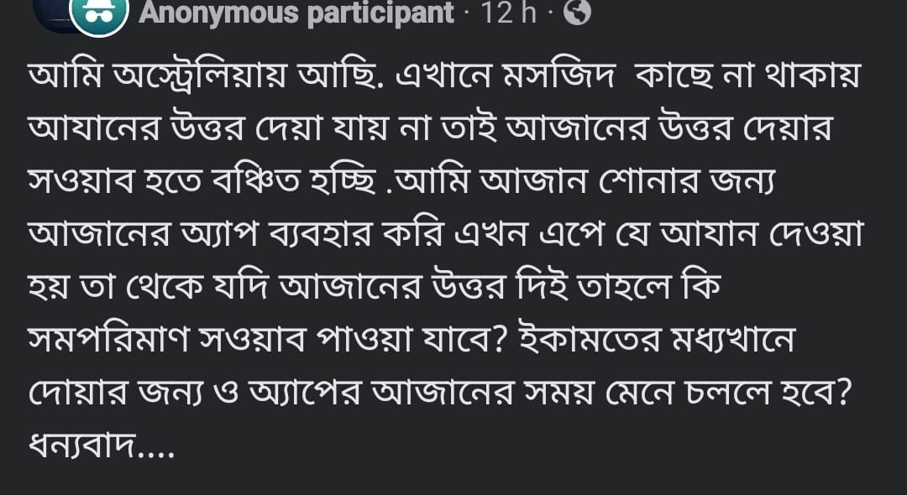

সুবহানাল্লাহ! একজন মুসলিম সাওয়াব লাভের জন্য কত উদগ্রীব। আর আমরা সাওয়াব লাভের কত…
৭ মে, ২০২৪
সুবহানাল্লাহ! একজন মুসলিম সাওয়াব লাভের জন্য কত উদগ্রীব। আর আমরা সাওয়াব লাভের কত ফুরসত তুচ্ছজ্ঞান করে হেলায় বিনষ্ট করি।
সুবহানাল্লাহ! একজন মুসলিম সাওয়াব লাভের জন্য কত উদগ্রীব। আর আমরা সাওয়াব লাভের কত ফুরসত তুচ্ছজ্ঞান করে হেলায় বিনষ্ট করি।
